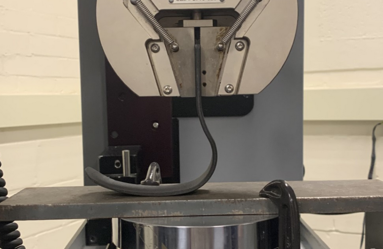

A group of four other students and I created a scaled-down prosthetic running blade with the goal of testing different 3D printing materials under compressive loading.
The process included modeling the prosthetic running blade in SolidWorks, 3D printing the model in two different filaments (PLA and Markforged Onyx filament),
running FEA simulations based on the impact of a human stride, and testing the FEA simulations with real-life forces gained through the use of an Instron Tensile and Compressive Machine.
A brief report of the project along with supporting pictures and data can be found here:
Brief Report
Data & Pictures
